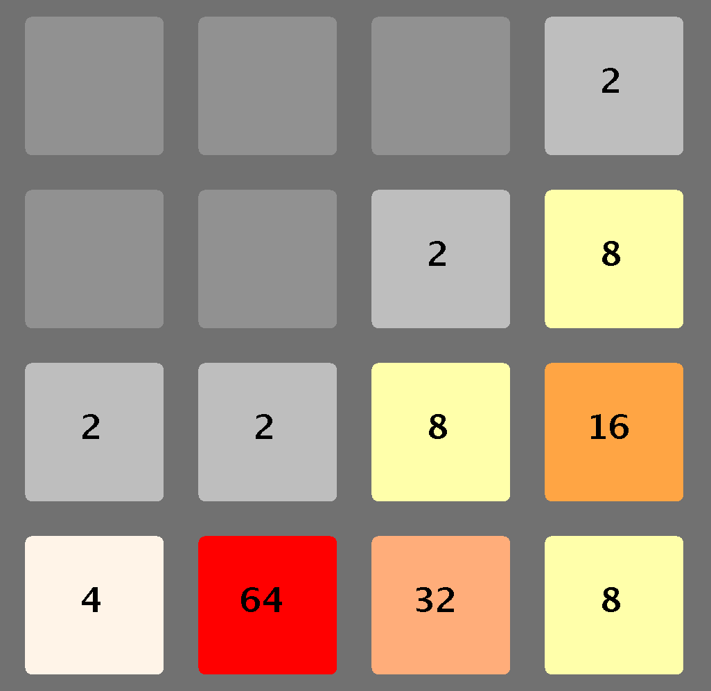
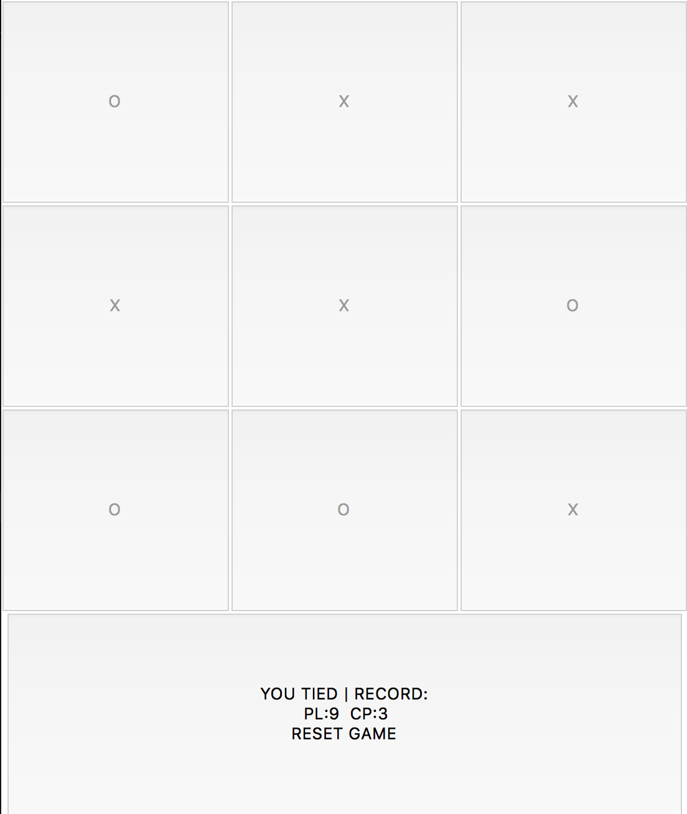

an implementation of the popular game '2048' that was implemented with the java programming language, and includes the use of elements from the Swing library. the arrow keys are used to move the tiles, and once the game is either won or lost, the user can press enter to play again. the github repository, including both the source code and tests for this game, can be found by clicking here
the personal website i created from scratch. the site was implemented using html, css, and javascript, which was used to hide the navigation bar when the user scrolled up on the site. i used resources provided from the github student developer pack to get the site up and running online. see the github repository containing the code for this website by clicking here
a tic-tac-toe game that was implemented with the python programming language, and includes use of the tkinter and sqlite3 libraries. the game is semi-intelligent in that it generally moves so that the chances of winning are higher after a random first move. the tkinter library is used to draw and construct the tic-tac-toe board, while the sqlite3 maintains a database that tracks how many times the player and computer have both won. see the github repository containing the code for this project by clicking here
